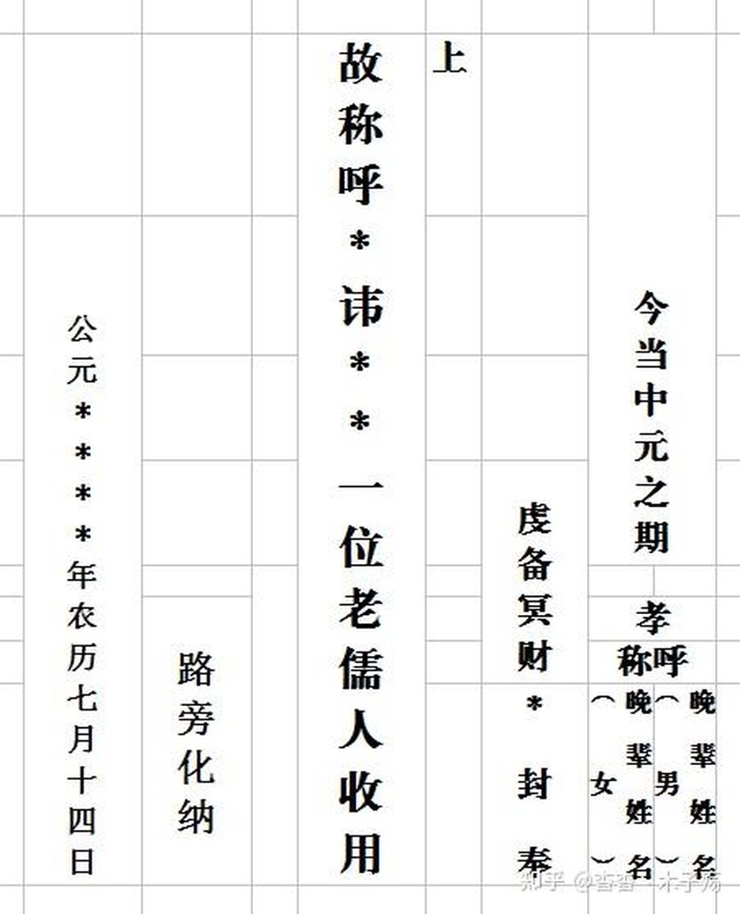
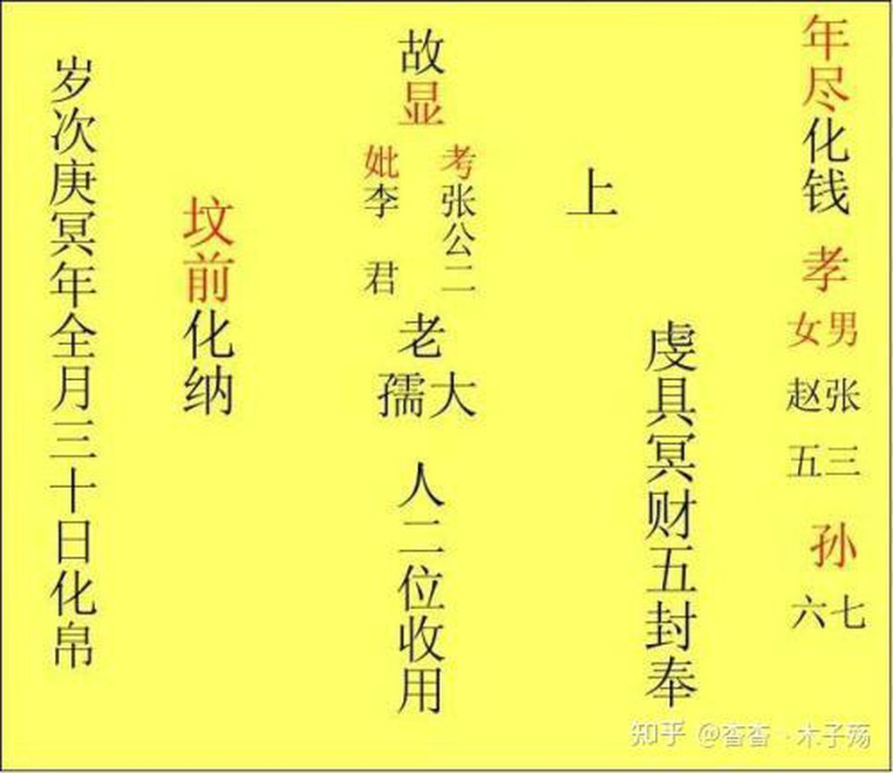
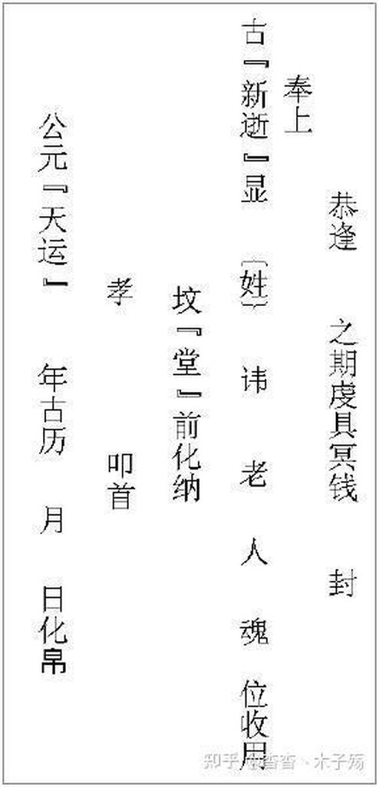
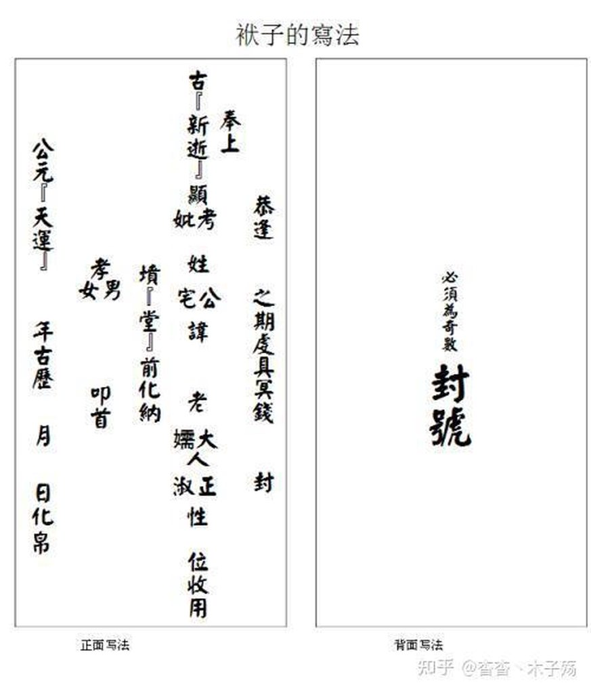
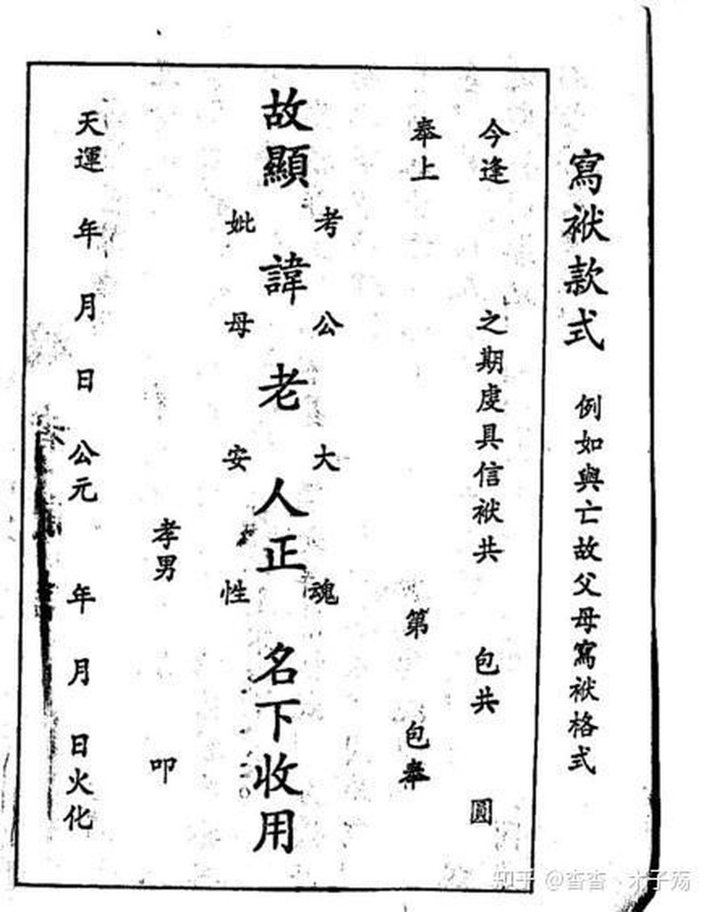

From 四川地区”写袱子“习俗 - 知乎
首先，烧袱子。是汉族信仰习俗，流行于四川各地。
由于父亲新逝，为了祭奠怀念，所以我根据老家（巴中地区）长辈说的和网上搜集的一些写袱子的格式（包含图片格式）发给大家，根据全国各地区文化习俗之差异，仅供参考。
”封袱子、写袱子、烧袱子 “都是为怀念去往天国的亲人、祭奠他们，不是封建迷信，是一种风俗、更是一种民族文化传统。
1、写袱子的基本格式：
袱子书写习惯是从上到下，从右向左，本来正规的应该是繁体字，但是现在我们很多时候不知道具体的繁体字了，所以从简也行。
2、写袱子的称谓：
男称大人，女称孺人。如：老大人，老儒人。老儒人中儒字可以变为”安“或者”夫“都可行，但是我们老家多用老儒人称呼。
老人死三年内：亡男称 新逝显考 或 新故显考，亡女称 新逝显妣 或 新故显妣。
三年后：亡男称 故显考 或 曾故显考 ，亡女称 故显妣 或 曾故显妣。
由于袱子一般是写三代，所以我就不过多列举，有需要可以百度文库，不要看其他野史。
一代：称父亲 故显考(姓)公讳(名字)老大人妣(姓)老孺人正魂收用 孝男 （备注：我们老家 很少写正魂二字)
二代：称祖父 故祖考(姓)公讳(名字)老大人妣(姓)老孺人正魂收用 孝孙
三代：称曾祖父 故曾祖(姓)公讳(名字)老大人妣(姓)老孺人正魂收用 孝曾孙
母之父：称外祖父 故外祖考 公諱 老大人收用 孝外孙
母之兄或弟：称舅 故舅考 公諱 老大人收用 孝外侄
妻之父：称岳父 故岳父 公諱 老大人收用 孝婿 叩
妻之祖父： 故内祖考 公諱 老大人收用 孙婿 叩
妻之姐夫： 故襟兄 收用 襟弟 叩
妻之姐姐： 故姨姐 府 氏收用 姨妹弟 叩
后父： 故继父 老大人收用 继男 叩
后母： 故继母 老孺人收用 继男 叩
丈夫： 故良人 收用 荆室 叩
妻： 故贤妻 收用 为夫 具
更多称谓，请查询百度文库。
3、烧袱子的节日称谓：
一般都以农历为准。格式上“今当或今逢”什么之期，对长辈可以是”恭逢什么之期“。是指什么节日写给已故亲人的袱子。不同的节日填写不同的日期。
新年 拜年之期
正月 上元之期
清明 拜扫之期
端阳 蒲节之期
七月半 中元之期 或 孟兰之期
腊月 下元之期 或 岁月之期 见暮之期
除夕 年尽之期（我们老家一般在农历大寒到立春，这段时间都流行砍坟草、垒坟、烧袱子等习俗，这个时候一般都用年尽之期）
烧七写首七，然后依顺序写二七、三七至十七，十七写封七作帛之期。百期写百期之期或卒哭之期；周年，一周年写小样之期；二周年写大样之期；三周年写除服之期。
一般情况，我们老家的人写袱子共计5列：
第一列 今逢什么之期 不孝男某某某、媳某某
第二列 虔具冥财 多少封 第几封 奉上
第三列 最主要的（逝去亲人的称谓）
第四列 坟前火化 （路边火化等）
第五列 天运多少年多少月多少日 火化 或者 公元多少年多少月多少日 火化（化纳）日期最好是写阴历。
列举几个常用的格式图片，方便大家依照各地方习俗选用。





原文地址:“袱包”的写法—农村乡党应酬之(一)
原作者:颍川郎
首先声明，本文并不是宣扬迷信，而是研究将要消失的民俗文化，随着新时代的来临，一些的民间历史文化正在消失，本人认为需要发掘、传承，供后世学者研究。
“袱包”是古时祭奠逝者，将冥币以信袱的方式化给幽冥界的亡魂，以寄托哀思。相当于现在人邮寄钱财。由于地域不同，写法也不尽一致，但大致相仿，其写法大有讲究，随着老一辈的逝去，正逐步失传。本人根据先辈口授，一一记录，如有谬误请阅者指正。
一、“袱包”的样式
（一）正面（一般为竖式，从右至左书写）
天 运 年 月 日 化 炼 | 孝 敬 献 | 故 考（妣） 老 大（孺） 人 正 魂 收 用 | 奉 上 第 号 | 具 备 信 袱 冥 财 共 封 |
（一）背面：在粘接头写上大大的“封”号，用袱子版印上运输的“飞马”图案。
二、祭祀、寄钱缘由
（一）节气与称谓
**1.**新年称为：拜年寄钱；2.清明称为：祭扫寄钱；
**3.**端午称为：蒲月寄钱；4.七月半称为：中元大会寄钱；
**5.**腊月称为：岁终寄钱；6.除夕称为：年尽寄钱。
（二） 亡灵去世
1. 死后百天：卒哭寄钱；2. 死后一年：小样寄钱；
3. 死后二年：大样寄钱；4. 死后三年：除服寄钱；
5. 丧事送礼称：香仪； 6. 烧灵：除灵寄钱。
（三）事件
1**.迁坟称为：迁葬寄钱； 2.垒坟称为：复土寄钱。**
**3.**建房迁居称：乔迁或菲仪。 4. 饯行送礼称：展翅或文仪；
5. **钉财门化纸：称竣工之期。**6. 吃新化纸称：新荐之期；
7. 送神化纸称**:让解之期; 8.** 还愿烧纸称**:**酬神了愿之期；
9.庆坛烧纸称:庆贺神福之期;
**10.**生病许愿称为：消灾免灾之期；
**11.**求财祈福称为：祈福之期。
12. 立碑烧纸称：竖碑之期
（四）婚姻、祝寿
1. 男方行聘****称为：纳采寄钱； 2. 女方受聘****称为：许缨寄钱；
3. 自已结婚****称为：受室寄钱； 4. 送男方结婚****称为：贺仪寄钱；
5. 送女方出阁 称为：奁仪寄钱； 6.结婚称为：完娶寄钱；
7. 嫁女称为：于归寄钱； 8. 夫死再嫁****称为：再熙寄钱。
9. 妻死再娶****称为：续弦寄钱。
（五）关系
1. 父与子化纸****称为：雨打青梅丧明；
2. 翁与媳化纸****称为：乐周云散；
3. 叔与侄化纸****称为：青春游仙；
4. 父与女化纸****称为：柳伤或折翼；
5. 妻与夫化纸****称为：无依；
6. 夫与妻化纸****称为：失群。
（六）生育、生日
**1.**生男孩称为：弄璋； 2.生女孩称为：弄瓦。
3.自已生日化纸称为：母难之期；4.亡人生日称为：冥寿寄钱。
5. 祝寿送礼****称为：寿敬寄钱
三、称呼
（一）1.男称考，女称妣，
**2.****长辈：**男称大人，女称孺人或安人。
**（二）****1.九代：称鼻祖 故鼻祖(姓)公讳(名字)老大人妣(姓)**老孺人正魂收用 孝耳孙
**2.八代：称远祖 故远祖(姓)公讳(名字)老大人妣(姓)**老孺人正魂收用 孝云孙
**3.七代：称太祖 故太祖(姓)公讳(名字)老大人妣(姓)**老孺人正魂收用 孝乃孙
**4.六代：称烈祖 故烈祖(姓)公讳(名字)老大人妣(姓)**老孺人正魂收用 孝弟孙
**5.五代：称天祖 故天祖(姓)公讳(名字)老大人妣(姓)**老孺人正魂收用 孝来孙
**6.四代：称高祖 故高祖(姓)公讳(名字)老大人妣(姓)**老孺人正魂收用 孝玄孙
**7.三代：称曾祖父 故曾祖(姓)公讳(名字)老大人妣(姓)**老孺人正魂收用 孝曾孙
**8.二代：称祖父 故祖考(姓)公讳(名字)老大人妣(姓)**老孺人正魂收用 孝孙
**9.一代：称父亲 故显考(姓)公讳(名字)老大人妣(姓)**老孺人正魂收用 孝男
**10.**父之兄：称伯伯 故伯考 公 老大人收用 孝胞侄
**11.**父之弟：称叔叔 故叔考 公 老大人收用 孝胞侄
**12.**父之堂兄：称伯伯 故堂伯 公 老大人收用 孝堂侄
**13.**父之侄：称兄或弟 故堂兄或弟 老大人收用 堂兄或弟
**14.**母之父：称外祖父 故外祖考 公讳 老大人收用 孝外孙
**15.**母之兄或弟：称舅 故舅考 公讳 老大人收用 孝外甥
**16.**母之伯爷：称堂外祖 故堂外伯祖 公讳 老大人收用 孝堂外孙
**17.**母之堂兄：称堂母舅 故堂母舅 公讳 老大人收用 堂外甥
**18.**父之姐夫：称姑父 故姑父 公讳 老大人收用 内侄 具
**19.**父之姐妹：称姑母 故姑母 府 氏老孺人收用 胞侄 叩
**20.**父之姑爷： 称故姑公 公讳 老大人收用 孝内侄孙 叩
**21.**父之姑姑：称姑婆 故姑婆 府 氏 老孺人收用 孝侄孙 叩
**22.**同父母之姐：称胞姐 故胞姐 府 氏收用 胞弟 叩
**23.**胞姐之丈夫：称姐夫 故姐夫 收用 内弟 叩
**24.**母之姐夫：称姨父 故姨父 府 老大人收用 姨侄 叩
**25.**母之姐妹：称姨母 故姨母 府 老孺人收用 姨侄 叩
**26.**妻之父：称岳父 故岳父 公讳 老大人收用 孝婿 叩
**27.**妻之伯爷：称伯岳父 故伯岳考 公讳 老大人收用 侄婿 叩
**28.**妻之伯娘： 故伯岳妣 母讳 氏老孺人收用 侄婿 叩
**29.**妻之祖父： 故内祖考 公讳 老大人收用 孙婿 叩
**30.**妻之姐夫： 故襟兄 收用 襟弟 叩
31****妻之姐姐： 故姨姐 府 氏收用 姨妹弟 叩
**32.**祖母之姨侄： 故姨表爷 公讳 老大人收用 表侄 叩
**33.**母之姨侄： 故姨表兄 收用 姨表弟
**34.**岳母之舅娘老表： 内表母舅 老大人收用 外侄婿
**35.**妻之表兄： 内表兄 收用 表妹弟
**36.**乾爹： 故寄父考 老大人收用 寄男 叩
**38.**乾爹之父亲： 故寄祖考 老大人收用 寄孙男 叩
**39.**乾爹之岳父： 故寄祖考 老大人收用 寄外孙
**40.**乾爹之子： 故寄兄 收用 寄弟 叩
**41.**妻之保爷： 故寄岳考 老大人收用 寄子婿
**42.**后父： 故继父 老大人收用 继男 叩
**43.**后母： 故继母 老孺人收用 继男 叩
**44.**大妈的儿子与小妈： 故妾母 老孺人收用 孝嫡男
**45.**小妈的儿子与大妈： 故嫡母 老孺人收用 孝庶男
**46.**奶妈： 故乳母 府 氏 收用 孝奶男
**47.**丈夫： 故良人 收用 荆室 叩
**48.**妻： 故贤妻 收用 为夫 具
49****朋友： 故彦兄 收用 世弟 叩
**50.**老庚： 故庚兄 收用 庚弟 叩
**51.**后夫与前夫： 故同绿 收用 同绿弟
**52.**公讳： 老大人收用 世侄 叩
**53.**手艺与师父： 故恩师 老大人收用 孝门徒 叩
**54.**拜把弟兄： 故血兄 收用 血弟
**55.**道士与老师： 金羽化法师 大真人收用 门徒
**56.**异族化纸： 故异族 收用 异族 叩
**57.**伯或叔与侄： 故贤侄 收用 愚伯或叔
**58.**亲家： 故姻兄 收用 姻兄 叩
**59.**未婚夫与妻： 故结发 府 断弦妹收用 断弦兄
**60.**未婚妻与夫： 故淑配 府 无缘兄 无缘妹
**61.**父亲与儿： 故幻化亡男 反念父
**62.**翁父与媳妇： 故幻化亡女媳 反念翁父
**63.**父亲与女： 故夭命亡女 反念父
**64.**岳父与女婿： 故贤门亡婿 反念岳
**65.**与亲家父母： 故姻尊 姻侄 叩
**66.**与亲家之祖： 故太姻尊 姻内侄孙
**67.**乞丐与施主： 故施主 丐人 叩
四．其他
**1.**天运： 相当于阳历的公元，阴历的纪年，不必太在意。
2****阴历干支纪年： 根据自己的实际情况，是哪一年就用那一年的。
**3.**化炼： 相当于在这一天烧钱，就是寄钱的意思。
**4.**封号，一般情况只给一个人烧一封，如烧几封，就要写几号。
**5.**给土地公公、土地婆婆写不要“故”字，后面不要“孝”字，己称信主。